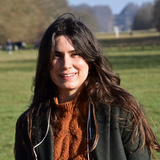

Claudia Fonte Sanchez

Claudia Fonte Sanchez
Postdoc
Université Grenoble Alpes
Laboratoire Jean Kuntzmann
microcosme team
Scholar
mail: claudia [dot] fonte [at] inria.fr
About me
I am a mathematician working on the intercept between partial differential equations and stochastic equations modeling objects and phenomena from biology. I am mainly interested in the study of preventive models of neurosciences, cell growth and protein expression.
Since May 2023 I have a joint postdoctoral position at the
Laboratoire Jean Kuntzmann
at the University Grenoble Alpes and the
microcosme
team at the INRIA Grenoble institute.
I finished my PhD in Mathematics in April 2023 at CEREMADE, Université Paris-Dauphine, France. My thesis supervisor was Professor Stephane Mischler. My doctoral research focused on the study of asymptotic estimates in two directions, when the number of particles of a dynamical system grows to infinity and the large time behavior of the solutions of partial differential equations. I was especially interested in the applications of different theoretical tools to biological models, especially in the field of neuroscience.
Collaborations with...
Tiangang Cui
on compositional transport based methods.
Jia Chen
on sparse inference methods for estimation of GHG emissions.
Manolis Perrot
and
Florian Lemarié
on calibration of ocean surface parameterizations.
Ignacia Cancino-Aguirre
on inference on metabolic networks.
Teaching
Courses
Mathematical modeling
at the University Grenoble Alpes
Stochastic calculus
at the University Grenoble Alpes
Supervision
Master thesis
at the University Grenoble Alpes
PhD thesis
at the University Grenoble Alpes
Publications
(see
google scholar
for a complete list)
Peer-reviewed
Claudia Fonte and Valentin Schmutz
Long Time Behavior of an Age- and Leaky Memory-Structured Neuronal Population Equation
[
pdf
]
SIAM Journal on Mathematical Analysis
54:4, 4721-4756, (2022)
Claudia Fonte Sánchez and Carlos Sánchez Fernández
Sobre la Estructura del Álgebra de Wiener-Walsh
[
pdf
]
Ciencas Matemáticas
31, 83-88, (2017)
Preprints
Claudia Fonte Sánchez and Stéphane Mischler
On the Voltage-Conductance kinetic equation
[
pdf
]
ArXiv:
2408.02471 (2024).
Claudia Fonte Sánchez, Pierre Gabriel, and Stéphane Mischler
On the Krein-Rutman theorem and beyond
[
pdf
]
ArXiv:
2305.06652 (2023).
Lizet Sanchez, Patricia Lorenzo-Luaces, Claudia Fonte, Agustin Lage
Mixture survival models methodology: an application to cancer immunotherapy assessment in clinical trials
[
pdf
]
ArXiv:
1911.09765 (2019).